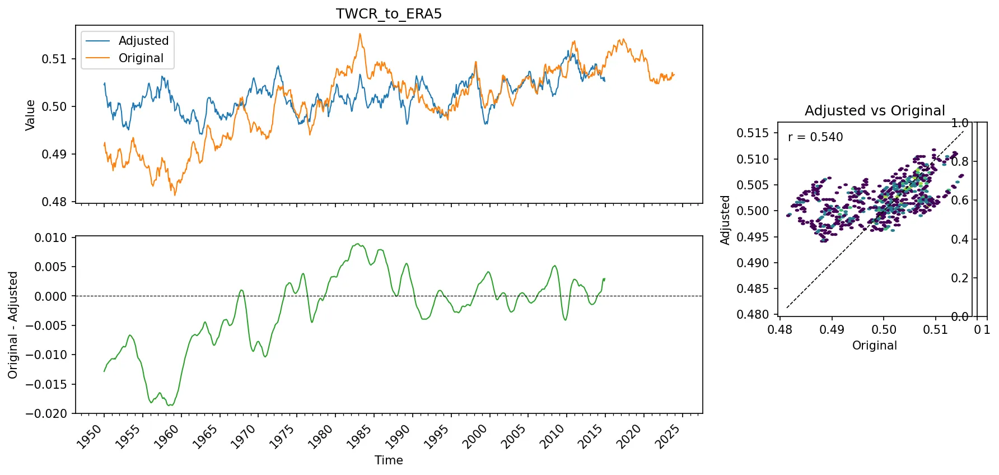

A Homogenized Precipitation Dataset¶
Precipitation is a difficult variable.
It’s not normally distributed, it has low space and time covariance, it’s very sensitive to orography (and so to data resolution), and its magnitude varies dramatically between regions and seasons. So let’s start from something easier - near-surface temperature anomaly, simply expressed:

Traditional climate stripes - global-mean, annual-mean temperature anomalies (w.r.t. 1961-90) from the HadCRUT5 dataset. (Figure source).¶
This is clear and powerful, but not very informative. It doesn’t show the spatial or seasonal structure of the data, and it doesn’t show any of the uncertainty or give insight into possible biases. To look at the data in more detail we can use the Extended Stripes:

Monthly temperature anomalies (w.r.t. 1961-90) from the HadCRUT5 dataset after regridding to a 0.25 degree latitude resolution. The vertical axis is latitude (South Pole at the bottom, North Pole at the top), and each pixel is from a randomly selected longitude and ensemble member. Grey areas show regions where HadCRUT5 has no data. (Figure source).¶
This version has sacrificed the beautiful simplicity of the original stripes, but it is enormously more informative. It shows the spatial and seasonal structure of the data, and it shows the places where observations are unavailable (the grey areas). This is starting to be useful for dataset construction and evaluation, but it’s still a bit noisy - in the extratropics there is a lot of high-frequency weather-driven variability, which makes it hard to see the underlying climate signal and any possible biases present. To get around this, one approach is to quantile-normalise the data before making the plot:

Same as the plot above, except that the data have been standardized to be normally distributed on the range 0-1 (approximately) at each grid-point, for each calendar month. (Normalization process, Figure source). This image has a slightly different colour map and spatial smoothing to the one above, so it looks a little different, but the underlying data are the same.¶
Standardized data has three advantages - interesting structure in the data stands out more clearly (for example the super-El-Nino of 1878, and the widespread cold period shortly after 1900), standardization is a requirement for modelling the data with Machine Learning tools, and we can make similar standardized plots from different base datasets, which makes it easier to compare them. And this brings us back to precipitation:

Same as the plot above, but for precipitation rate from the Twentieth Century Reanalysis (20CRv3) dataset. (Figure source).¶
The challenges of working with precipitation are immediately apparent. In the temperature plot, the data are dominated by strong signals (global warming, ENSO, the Early-20th-Century warming) with some contamination from biases and noise (the widespread cold at the beginning of the 20th Century, for example, is likely bias). In the precipitation plot, some signal is visible (the late-20th Century moistening, some ENSO features, …) but most of the visible signal is bias - the strong drying in the south is almost certainly a reflection of a sea-ice bias in the HadISST dataset, which is used as a boundary condition in 20CRv3, and the tropical shifts in the 19th Century are probably a result of model bias in the reanalysis showing up in places where there are too few pressure observations to constrain the reanalysis properly. (I’m not sure whether the shifts in the far north are real or not).
To look at biases in more detail, we can look, not just at 20CRv3, but at a range of datasets. We will compare five different datasets - two reanalyses, two gridded observational datasets, and a blended satellite-based dataset.
We can then see the problem of pervasive bias by comparing global mean precipitation time-series from all the datasets:

Global mean standardized precipitation rate from a range of datasets, including reanalyses, gridded observations, and a satellite-based dataset. (Figure source).¶
These are all high-quality datasets, the product of an immense amount of work and care, but they don’t agree well at all. We can see a consensus trend in recent years, but centennial-scale trends differ greatly, and so does the decadal variability. Normalising the data has let us make meaningful global averages, but part of the problem is that the datasets don’t have the same coverage - so we can look at the same plot, but for a smaller region where all the datasets have good coverage:

Same as the figure above, but a mean over the European region (35-65N, 15W-30E) instead of the global mean.¶
The message here is that the datasets based on in-situ observations (both conventional and reanalyis) agree well in places where there are lots of in-situ observations. But adding satellite data to the mix generates large discrepancies.
A practical take-away is ‘Use 20CRv3 as your estimate for observed precipitation’, but only trust it in places where there are lots of in-situ observations. But that’s a bit vague - exactly where is it trustworthy - and unsatisfactory as 20CR is not a precipitation dataset - it doesn’t use precipitation observations at all. So we want to do better, can we improve the datasets that do use precipitation observations? The first step is to model the datasets, and to use the models to identify and remove the inhomogeneities in the data.
Modelling precipitation with a decision tree¶
To model the relationships between the data, we are going to use a decision-tree regression model, implemented with the XGBoost library. We are going to model the relationship between precipitation and the more reliable surface variables (such as temperature and pressure) in the reanalysis datasets. If we can train a model to predict precipitation from these more reliable surface variables, then we can use the model to identify and remove inhomogeneities in the precipitation data.

A decision tree model can be trained to estimate precipitation from relatively reliable surface fields.¶
We will start by modelling 20CRv3. What happens if we train a model to predict 20CRv3 precipitation from 20CRv3 surface variables?

Global mean standardized precipitation rate from 20CRv3, and as calculated from a decision tree model (Figure source).¶
The model fits well over the training period (1990-2014), and extrapolates well to the previous few decades (1950 on), but there is a systematic offset before about 1940, and a large offset around the period of the second world war. A degradation in a model fitted to recent data in earlier periods indicates that the relationship between surface variables and precipitation (in 20CRv3) has changed over time. A likely cause for this is that the boundary conditions used in 20CRv3 (temperature and pressure) have inhomogeneities in the earlier periods. This result isn’t that surprising - the known uncertainties in surface temperature biases - in HadISST - have exactly this pattern.
We can look at possible inhomogeneities in 20CRv3 in more detail by looking at the extended stripes plots of the reanalysis variables:
Inspection of the 20CRv3 fields supports the conclusions drawn from the model fit - there are large inhomogeneities in the surface variables before about 1950, and especially around the period of the second world war. This suggests that we can usefully use surface datasets from 20CR as a constraint on estimated precipitation, at least at the global scale, since about 1950. This is a useful result, since it means that we can use the more homogenous surface variables from 20CRv3 to constrain the precipitation in ERA5 over almost its entire record, and so to produce a more homogenous version of the ERA5 precipitation record.
A decision-tree model of the inhomogeneities in ERA5 precipitation¶
ERA5 is not at all homogenous - and again we can see this in the extended strips plots:
So there is potential for improving the homogeneity of the ERA5 precipitation record by using the more homogenous surface variables from 20CRv3 to constrain the precipitation in ERA5. We can test this by training a model to predict ERA5 precipitation from 20CRv3 surface variables.

Same as the plot above, but using a model trained to predict ERA5 precipitation using 20CRv3 temperature, pressure, wind and humidity (Figure source).¶
So the decision tree model works as expected - it fits well over the training period (1990-2014), but deviates before this - with precipitation predicted by the decision tree model showing less long-term variability than the ERA5 precipitation. Much of the inhomgeneity in ERA5 precipitation is missing from the modelled precipitation.
Building a homogenized version of ERA5 precipitation¶
We could use the model derived above as a homogenized precipitation record, but this would have the same disadvantages as using 20CRv3 directly. a better approach is to use the model to estimate the inhomogeneities in ERA5 precipitation, and then to subtract these estimated inhomogeneities from the original ERA5 precipitation record. This leaves un-modelled components of the ERA5 precipitation record in place, but still removes the modelled inhomogeneities. The model fit is exactly the same, but we apply smoothing to the estimated inhomogeneities before subtracting them from the original data, to avoid introducing high-frequency noise into the adjusted data. The result is a version of the ERA5 precipitation record with some of the inhomogeneities removed, and so a more reliable estimate of the true long-term variability in global mean precipitation than the original ERA5 precipitation record.

Global mean standardized precipitation rate from ERA5, and the same after adjustment to remove inhomogeneities using 20CRv3 surface variables (Figure source).¶
Conclusions¶
Precipitation is a difficult variable, and all datasets - even the best - have substantial biases and inhomogeneities.
These biases and inhomogeneities can be identified and visualized using the extended-stripes approach, especially if the data are standardized first.
Decision Tree models can be trained to predict precipitation from more reliable surface variables. This can be used to identify inhomogeneities in the data.
Unfortunately, even relatively reliable surface variables (temperature, pressure, …) have significant inhomogeneities in the reanalysis datasets, especially early in the record, they can’t be treated as a reliable source before about 1950.
Subtracting the modelled precipitation from the original data can be used to estimate inhomogeneities, and subtracting these estimated inhomogeneities from the original data produces a homogenized version of the ERA5 precipitation record. This is far from perfect, but it does remove some of the most egregious inhomogeneities, and it is a step towards a more reliable precipitation dataset.
A desirable next step would be to use a similar approach to homogenize other variables (temperature, pressure, sea-ice, …) and so to make a more homogenous long-term reanalysis.
Small print¶
This document is crown copyright (2026). It is published under the terms of the Open Government Licence. Source code included is published under the terms of the BSD licence.

{kind=link}